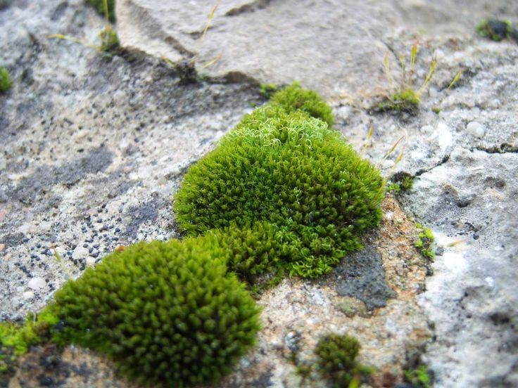
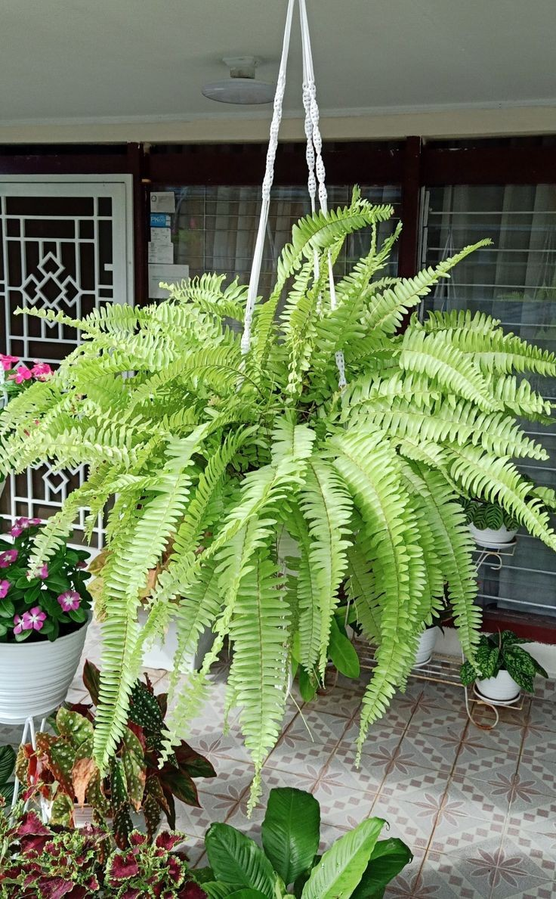
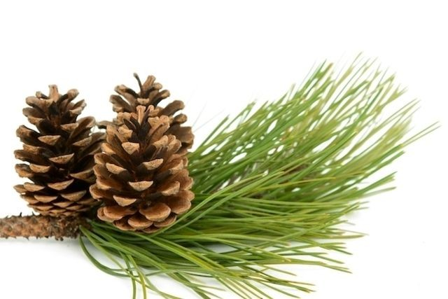
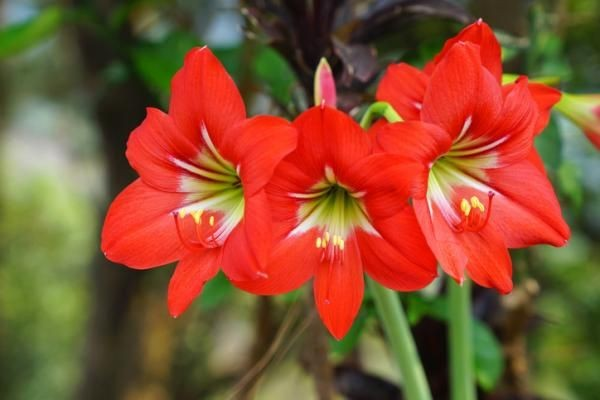

Reino Vegetal
O Reino Vegetal, também conhecido como Reino Plantae, inclui organismos multicelulares eucariontes autotróficos que realizam fotossíntese. Estes organismos possuem paredes celulares compostas por celulose e são fundamentais para a manutenção da vida na Terra.
Características Gerais
O Reino Vegetal é composto por organismos multicelulares, eucariontes, que realizam fotossíntese para produzir seu próprio alimento. Suas células possuem paredes celulares de celulose e contêm clorofila, que permite a captura de luz para a fotossíntese. As plantas podem se reproduzir de forma sexual ou assexual e possuem crescimento contínuo ao longo da vida. Elas exibem grande diversidade, variando de musgos a grandes árvores, e possuem tecidos especializados, como xilema e floema, para transporte de água e nutrientes. Além disso, as plantas são adaptáveis a diferentes ambientes e desempenham um papel vital na manutenção da vida na Terra.
Grupos Principais
Briófitas
As briófitas incluem musgos e hepáticas, que são plantas simples sem vasos condutores. Geralmente crescem em locais úmidos.
Pteridófitas
Pteridófitas, como as samambaias, possuem vasos condutores e reproduzem-se por esporos, mas não produzem sementes.
Gimnospermas
As gimnospermas, como os pinheiros, são plantas com sementes, mas sem frutos, geralmente adaptadas a climas variados.
Angiospermas
As angiospermas são as plantas mais diversificadas, com flores e frutos que protegem as sementes. Exemplos incluem árvores frutíferas e flores ornamentais.
Importância do Reino Vegetal
Os organismos do Reino Vegetal são essenciais para a vida no planeta. Produzem oxigênio através da fotossíntese, servem como base para cadeias alimentares e oferecem matéria-prima para alimentos, medicamentos e outros produtos.